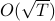

|
Book chapter
Michael J. Neely and Hao Yu, ‘‘Lagrangian Methods for Convergence in Constrained Convex Programs” Convex Optimization: Theory, Methods, and Applications, edited by Arto Ruud, Nova Publishers, Jan. 2019. [PDF file]. This book chapter serves as an educational medium to teach our O(1/T) constrained convex programming method developed in our SIOPT2017 paper and related Lagrangian methods. For the educational purpose, Mike even designed a couple of exercise problems.
Journal paper
Xiaohan Wei, Hao Yu and Michael J. Neely, ‘‘Online Primal-Dual Mirror Descent under Stochastic Constraints," Proceedings of the ACM Series on Computing Systems Modeling, Measurement and Evaluation (PACM) and ACM SIGMETRICS 2020.
Hao Yu and Michael J. Neely, ‘‘A Low Complexity Algorithm with  Regret and O(1) Constraint Violations for Online Convex Optimization with Long Term Constraints,” Journal of Machine Learning Research, 2020.
Hao Yu and Michael J. Neely, ‘‘Learning Aided Optimization for Energy Harvesting Devices with Outdated State Information,” IEEE/ACM Transactions on Networking, 27(4), Aug. 2019, pp. 1501-1514.
Hao Yu and Michael J. Neely, ‘‘A New Backpressure Algorithm for Joint Rate Control and Routing with Vanishing Utility Optimality Gaps and Finite Queue Lengths,” IEEE/ACM Transactions on Networking, 26(4), Aug. 2018, pp.1605-1618.
Hao Yu and Michael J. Neely, ‘‘On the Convergence Time of Dual Subgradient Methods for Strongly Convex Programs,” IEEE Transactions on Automatic Control, 63(4), 2018, pp.1105-1112, arXiv long versioin.
Xiaohan Wei, Hao Yu and Michael J. Neely, ‘‘Online Learning in Weakly Coupled Markov Decision Processes: A Convergence Time Study,’’ Proceedings of the ACM Series on Computing Systems Modeling, Measurement and Evaluation (PACM), 2(1), 2018 and ACM SIGMETRICS 2018.
Hao Yu and Michael J. Neely, ‘‘A Simple Parallel Algorithm with an Convergence Rate for General Convex Programs,” SIAM Journal on Optimization, 27(2), 2017, pp.759-783. This is my favorite paper so far!!
Hao Yu and Michael J. Neely, ‘‘Dynamic Transmit Covariance Design in MIMO Fading Systems With Unknown Channel Distributions and Inaccurate Channel State Information," IEEE Transactions on Wireless Communications, 16(6), Jun. 2017, pp.3996-4008, arXiv long versioin.
Hao Yu and Michael J. Neely, ‘‘Duality Codes and the Integrality Gap Bound for Index Coding,” IEEE Transactions on Information Theory, 60(11), Nov. 2014, pp.7256-7268.
Hao Yu and Vincent K. N. Lau, ‘‘Rank-Constrained Schur-Convex Optimization with Multiple Trace/Log-Det Constraints,” IEEE Transactions on Signal Processing, 59(1), Jan. 2011, pp.304-314.
Hao Yu, Shunqing Zhang and Vincent K. N. Lau, ‘‘Game Theoretical Power Control for Open-Loop Overlaid Network MIMO Systems with Partial Cooperation,” IEEE Transactions on Wireless Communications, 10(1), Jan. 2011, pp.135-141.
Conference paper
Hao Yu, ‘‘A Communication Efficient Stochastic Multi-Block Alternating Direction Method of Multipliers," Advances in Neural Information Processing Systems (NIPS 2019), (Acceptance Rate 21.1%=1428/6743). [Poster].
Hao Yu and Rong Jin ‘‘On the Computation and Communication Complexity of Parallel SGD with Dynamic Batch Sizes for Stochastic Non-Convex Optimization," International Conference on Machine Learning (ICML 2019), (Acceptance Rate 22.6%=773/3424).[Poster].
Hao Yu and Rong Jin and Sen Yang, ‘‘On the Linear Speedup Analysis of Communication Efficient Momentum SGD for Distributed Non-Convex Optimization," International Conference on Machine Learning (ICML 2019), (Acceptance Rate 22.6%=773/3424).[Poster].
Hao Yu and Sen Yang and Shenghuo Zhu, ‘‘Parallel Restarted SGD with Faster Convergence and Less Communication:Demystifying Why Model Averaging Works for Deep Learning," AAAI Conference on Artificial Intelligence (AAAI 2019), (Acceptance Rate 16.2%=1150/7095). [Slides].
Xiaohan Wei, Hao Yu, Qing Ling, Michael J. Neely, ‘‘Solving Non-smooth Constrained Programs with Lower Complexity than : A Primal-Dual Homotopy Smoothing Approach," Advances in Neural Information Processing Systems (NIPS 2018), (Acceptance Rate 20.8%=1011/4856). [arXiv long version]
Hao Yu and Michael J. Neely, ‘‘Learning Aided Optimization for Energy Harvesting Devices with Outdated State Information,” IEEE International Conference on Computer Communications (INFOCOM 2018),(Acceptance Rate 19.2%=309/1606).
Hao Yu, Michael J. Neely and Xiaohan Wei, ‘‘Online Convex Optimization with Stochastic Constraints,” Advances in Neural Information Processing Systems (NIPS 2017), (Acceptance Rate 20.9%=678/3240). [Conference Poster][arXiv long versioin]
Hao Yu and Michael J. Neely, ‘‘A New Backpressure Algorithm for Joint Rate Control and Routing with Vanishing Utility Optimality Gaps and Finite Queue Lengths,” IEEE International Conference on Computer Communications (INFOCOM 2017), (Acceptance Rate 20.9%=292/1395).
Hao Yu and Michael J. Neely, ‘‘A Primal-Dual Type Algorithm with the Convergence Rate for Large Scale Constrained Convex Programs,” IEEE Conference on Decision and Control (CDC 2016).
Hao Yu and Michael J. Neely, ‘‘Dynamic Power Allocation in MIMO Fading Systems Without Channel Distribution Information,” IEEE International Conference on Computer Communications (INFOCOM 2016),(Acceptance Rate 18.2%=300/1644).
Hao Yu and Michael J. Neely, ‘‘On the Convergence Time of the Drift-Plus-Penalty Algorithm for Strongly Convex Programs,” IEEE Conference on Decision and Control (CDC 2015).
Hao Yu and Michael J. Neely, ‘‘Duality Codes and the Integrality Gap Bound for Index Coding,” Proc. Allerton Conference on Communication, Control, and Computing (Allerton 2013).
Hao Yu and Vincent K. N. Lau, ‘‘Rank Constrained Schur-Convex Optimization with Multiple Trace/Log-Det Constraints,” IEEE Global Communications Conference (GLOBECOM 2010).
Hao Yu and Vincent K. N. Lau, ‘‘Rank-Constrained Transmit Covariance Optimization in MIMO Cognitive Radio Networks,” Proc. IEEE International Conference on Wireless Communications and Signal Processing (WCSP 2010).
Hao Yu, Shunqing Zhang, Vincent K. N. Lau and Xun Yang, ‘‘Game Theoretical Power Control for Open-Loop Network MIMO Systems with Partial Cooperation,” IEEE Region 10 Conference (TENCON 2009).
Preprint
Hao Yu and Michael J. Neely, ‘‘A Primal-Dual Parallel Method with Convergence for Constrained Composite Convex Programs,” under submission, 2017, arXiv:1708.00322.
Xiaohan Wei, Hao Yu and Michael J. Neely, ‘‘A Probabilistic Sample Path Convergence Time Analysis of Drift-Plus-Penalty for Stochastic Optimization,” under submission, arXiv:1510.02973.
Michael J. Neely and Hao Yu, ‘‘Online convex optimization with time-varying constraints," arXiv:1702.04783 This paper has some overlapping with our NIPS2017 paper. However, it also considers arbitrary time varying constraints uncovered in our NIPS2017 paper. See footnote 1 in ArXiv long version of NIPS2017 for distinctions.
|